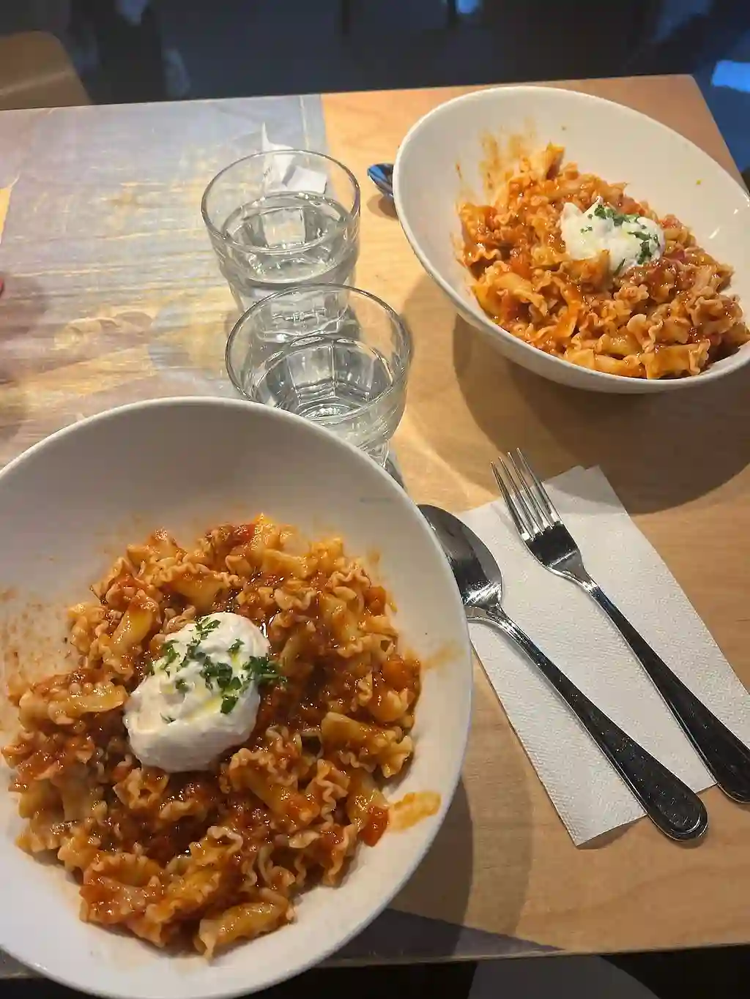
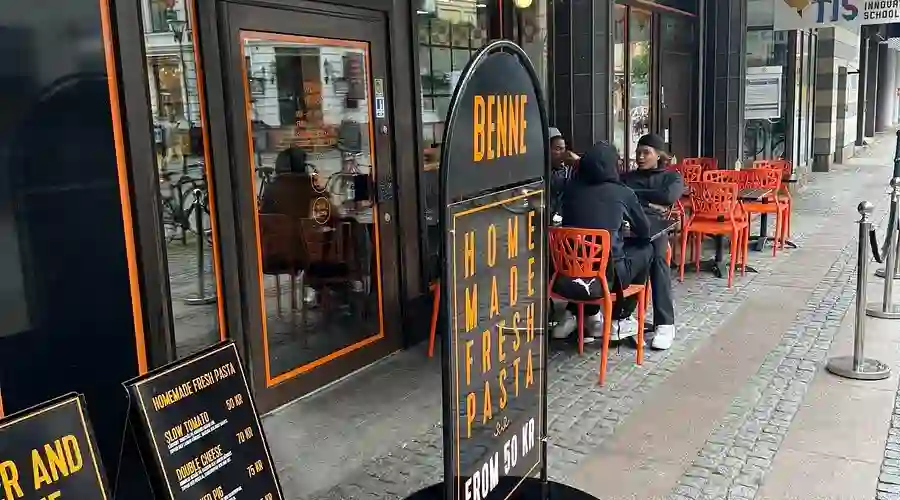

DEL 5
Bekräftelsen

Framme vid Benne pasta bar slog de sig ner vid ett bord längst in i lokalen, bakom en pelare som dolde dem från insyn från gatan. De beställde var sin pasta. Sorlet från lunchgästerna runt omkring lade sig som ett dämpande bakgrundsbrus.
Camilla drog fram papperen Mia hämtat ut. "Vi måste vara försiktiga," sa hon lågt och såg sig över axeln. "Om Jonathan får veta att vi har det här...". Camillas ögon smalnade medan hon läste. Dokumenten målade en bredare bild av Jonathan än någon av dem anat — sidoprojekt, tveksamma samarbeten, kontakter som inte gick att förklara. Men mitt i allt: lappen. Beviset på affären, handskriven och obestridlig.
"Det här bekräftar det vi befarade", sa hon. Rösten var stadig, men knappt hörbar över sorlet. "Han har ljugit. Inte bara för oss. För alla."
Mia satt stilla, händerna hårt knutna i knäet. Hon visste inte om hon borde säga något, men Camilla fortsatte utan att ge henne tid att fundera. "Vi kan inte stanna här," sa Camilla efter ett ögonblick. Hon plockade ihop pappren i en prydlig hög. "Du måste gå vidare med detta."
Hon såg på Mia, allvaret i blicken var som en tyngd mot bröstet. "Gateau i Västra Hamnen," sa hon lågt. "Där väntar nästa del. De vet inte att du kommer, men du kommer förstå när du är där."
Mia nickade, hjärtat dunkade hårt i bröstet. Hon visste vad det betydde: nästa steg skulle vara ännu jobbigare. Camilla lade en hand på hennes arm, en nästan omärklig gest av stöd. "Var försiktig," sa hon, medan hon drog på sig jackan, slängde väskan över axeln och försvann ut genom dörren utan att se sig om.
Mia satt kvar en stund efter att Camilla lämnat Benne, som för att samla sig. Hon visste att hon inte kunde tveka. Inte nu. Gateau låg bara några kvarter bort. Hon drog upp luvan på jackan och gick längs gatan, huvudet nedböjt, hjärtat hamrade i bröstet.

Vet du vart Mia är på väg? Skriv in adressen för att följa efter.